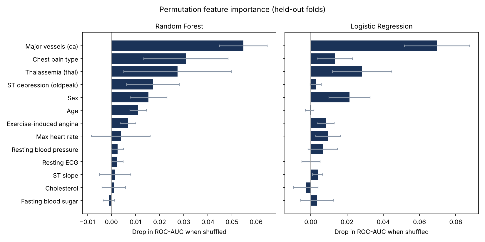

Heart Disease Risk Prediction Using Machine Learning and Deep Learning
Jul 2025 – Jul 2026Final Year Project, BS Hons Software Engineering · Grade A
I compared Logistic Regression, Random Forest and a neural network (TensorFlow/Keras, with dropout) on 13 clinical features from 597 patient records. The three probabilities are averaged into a Low, Medium or High risk level and shown in a Flask web application.
0.90ROC-AUC, cross-validated
0.83Accuracy, cross-validated
597Patient records, 13 features
- Evaluated with repeated stratified 5-fold cross-validation and reported recall, F1-score and confusion matrices, because a missed disease case is the costliest error.
- Half of the records had missing values. I compared dropping those rows with median imputation done inside each fold, so no information leaked from validation data. Imputation kept all records, gave similar scores and roughly halved the variation between folds.
- Measured permutation feature importance on held-out folds. A linear model and a tree model independently ranked major vessels, chest pain type and thalassemia among the strongest predictors.
- Wrote a model card covering intended use and limitations, plus data tests and continuous integration on GitHub Actions.
| Missing data | Model | Accuracy | Recall | ROC-AUC |
|---|---|---|---|---|
| Drop rows (n=298) | Logistic Regression | 0.833 ± 0.040 | 0.790 ± 0.093 | 0.902 ± 0.046 |
| Drop rows (n=298) | Random Forest | 0.822 ± 0.057 | 0.763 ± 0.085 | 0.903 ± 0.037 |
| Median imputation (n=597) | Logistic Regression | 0.839 ± 0.031 | 0.771 ± 0.048 | 0.897 ± 0.023 |
| Median imputation (n=597) | Random Forest | 0.829 ± 0.019 | 0.747 ± 0.045 | 0.895 ± 0.021 |

- Python
- scikit-learn
- TensorFlow / Keras
- Pandas
- Flask
- MySQL
- GitHub Actions